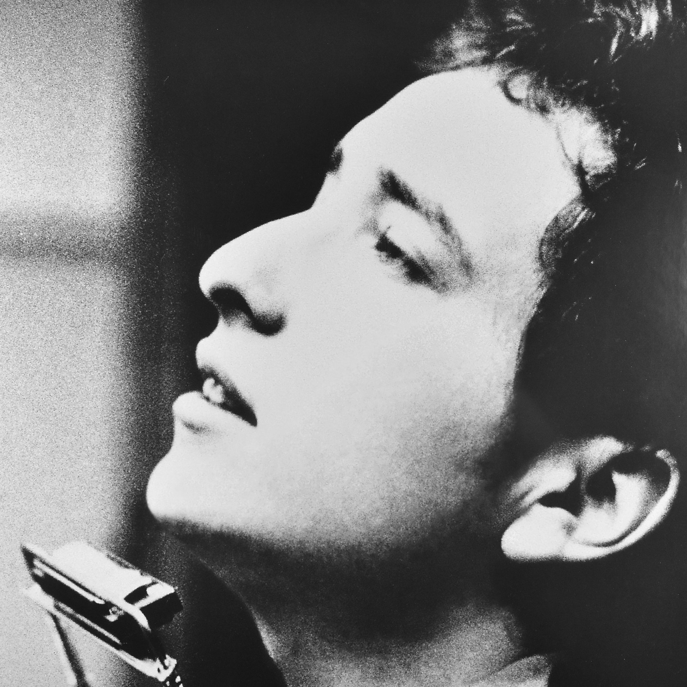
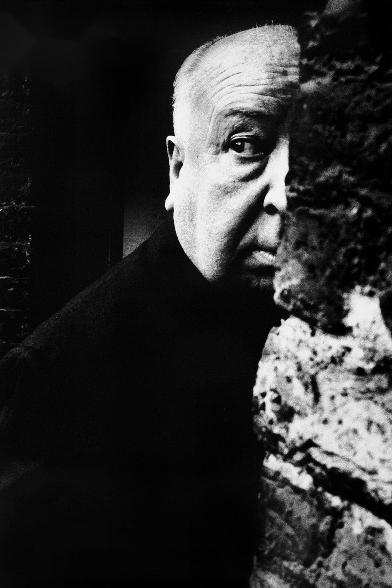
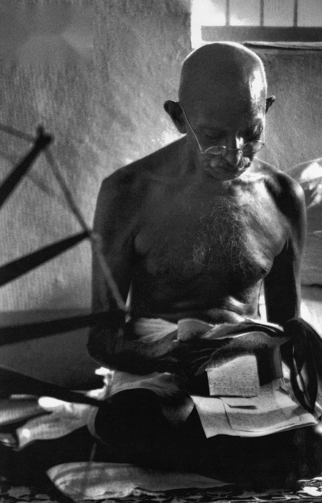
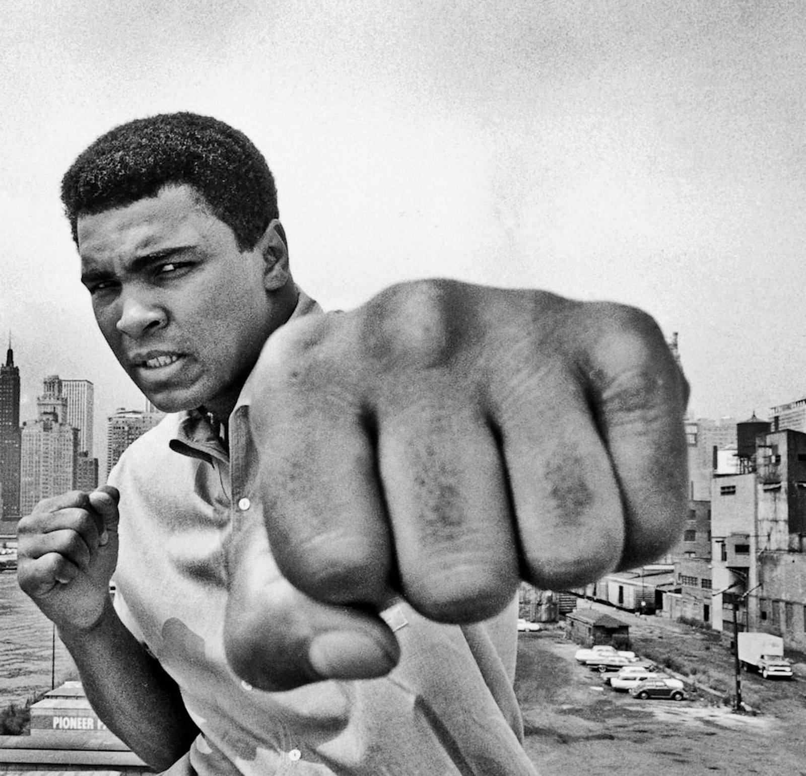
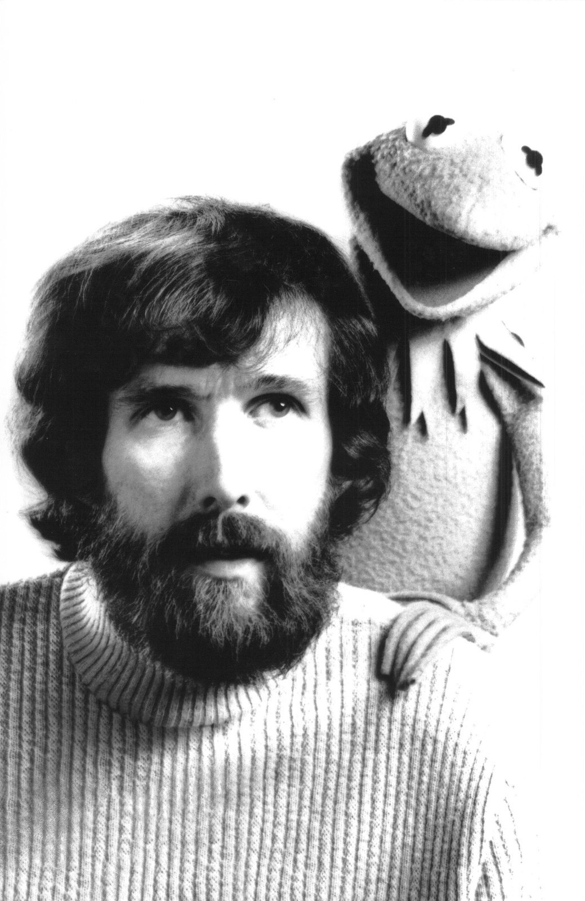
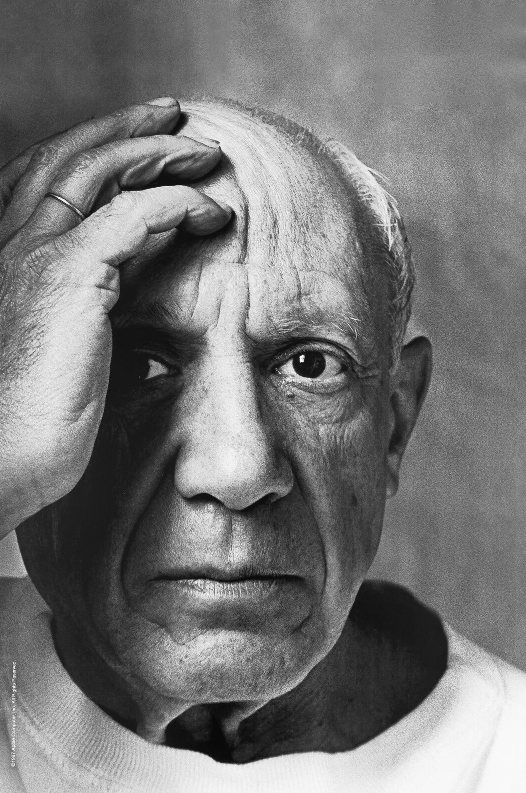
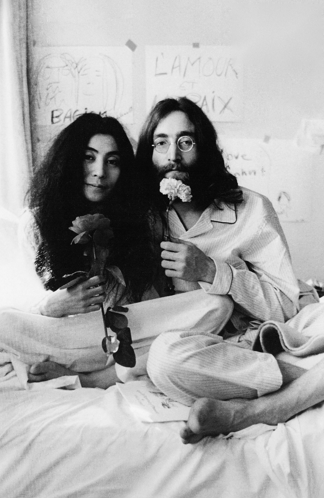

Here’s to the crazy ones.
The misfits. The rebels. The troublemakers.

The round pegs in the square holes. The ones who see things differently.
They’re not fond of rules. And they have no respect for the status quo.


You can quote them, disagree with them, glorify or vilify them.
About the only thing you can’t do is ignore them. Because they change things.

They invent. They imagine. They heal. They explore. They create. They inspire. They push the human race forward.

And while some may see them as the crazy ones, we see genius.

Because the people who are crazy enough to think they can change the world, are the ones who do.
